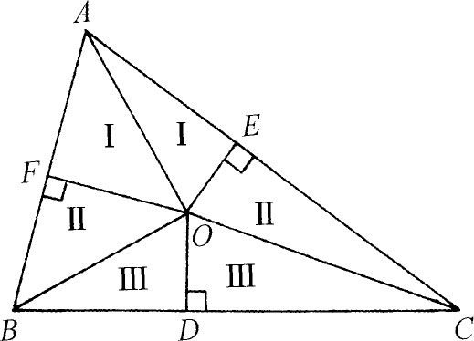
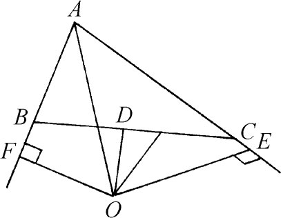

1．欧几里得中的缺陷
对于欧几里得的定义和公理的批评（第4章第10节），要追溯到最早的两位著名的注释者：帕普斯和普罗克洛斯。在文艺复兴时期，当欧几里得第一次被介绍给欧洲人时，他们也注意到了上面的瑕疵。佩莱蒂耶（Jacques Peletier，1517—1582）在他的《欧几里得几何原本中的证明》（In Euclidis Elementa Geometrica Demonstrationum，1557）一书中，批评了欧几里得使用叠合法去证明全等方面的定理。甚至哲学家叔本华（Arthur Schopenhauer）在1844年也说，他感到很奇怪的是，数学家们攻击欧几里得的平行公设，而不去攻击重合的图形是相等的这一条公理。他论述说，重合的图形自然是恒等或相等的，因而无需什么公理；或者，重合完全是一种经验性质的事情，不属于纯直觉知识（Anschauung），而是属于外部感官的经验。另外，这条公理预先假设了图形的可移动性；但是，在空间中能移动的是物质，因此超出了几何的范围。19世纪时已普遍认识到，叠合法或者是建立在一些未明确说明的公理的基础上，或者必须用另一种探讨全等的方法来代替。
有些批评家不希望把所有的直角都相等这种陈述作为一条公理，并力图去证明它（当然是在别的公理的基础上去证明它）。欧几里得著作的一位编辑者克拉维于斯（Christophorus Clavius，1537—1612）注意到还缺少一条公理来保证与三个已知量成比例的第四个量的存在（第4章第5节）。莱布尼茨正确地评述道，当欧几里得断言（卷1命题1）两个互相经过对方圆心的圆有公共点的时候，他是依赖于直观的。换句话说，欧几里得假定了圆是某一种连续的结构，所以在它被另一个圆分割的地方必定有一个点。
高斯也注意到了欧几里得几何表述中的短处。他在1832年3月6日给沃尔夫冈·波尔约的一封信(1)中指出，说到一个平面在三角形内部的一部分，这是需要适当的基础的。他还说：“在完全的阐述中，诸如‘在……之间’那样的词必须建立在清晰的概念上，这是能够做到的，但我在任何地方都没有看到过。”高斯还附带批评了直线的定义(2)和平面的定义，其中平面定义为一种曲面，使得连接它上面任意两点的直线必定在它上面(3)。
众所周知，错误结论的许多“证明”是能够做出来的，因为欧几里得的公理没有强行规定某些点与另外一些点必须处于什么样的位置关系。例如，每一个三角形都是等腰的“证明”就属于这种情况。作出△ABC中角A的平分线和BC边上的垂直平分线（图42.1）。如果这两条线平行，则这角平分线就垂直于BC，因而这三角形就是等腰三角形。因此，我们假定这两条直线交于（比如说是）O点，然而我们仍将“证明”这三角形是等腰的。我们作出垂直于AB的线OF和垂直于AC的线OE。那么标着Ⅰ的两个三角形是全等的，因而OF＝OE。标着Ⅲ的两个三角形也全等，因而OB＝OC。从而标着Ⅱ的两个三角形也全等，所以FB＝EC。从标着Ⅰ的两个三角形，我们得到AF＝AE。于是AB＝AC，从而三角形就是等腰的了。

图42.1
人们也许要问，点O的位置到底在哪里？而实际上可以证明，它必定在三角形的外部，在外接圆上。但是如果画成图42.2，就依然能“证明”三角形ABC是等腰的。漏洞在于E，F两点，它们必须分别在三角形中各自边的内部和外部。但这就意味着在开始证明之前我们就必须能够确定相对于A和B的点F的正确位置，以及相对于A和C的点E的正确位置。当然不应该依赖于画出正确的图形来确定E和F的位置，但这恰巧是欧几里得和直到1800年为止的数学家们所做的事情。欧几里得几何被说成是给出了由图形直观地猜测到的定理的精确证明，其实它只是提供了精确画出的图形的直观证明。

图42.2
虽然对欧几里得《原本》的逻辑结构的批评，差不多从它写成之日就已开始了，但这些批评流传不广，或者其中的缺陷被认为是次要问题。《原本》被普遍认为是严密性的楷模。然而非欧几何的工作使数学家们看清了欧几里得结构中的全部缺陷，因为在做出证明的时候，他们不得不持特别的批判态度来对待他们所采用的东西。
认识到许多缺陷的存在，终于迫使数学家们着手重建欧几里得几何以及含有同样弱点的其他几何的基础。这项活动在19世纪的最后30年中变得非常广泛。